Energy Insights IoT Startup2023
CLIP Energy
Clean Tech and Entrepreneurship
How might we reduce electricity consumption, lower bills, and accelerate our transition to net zero?
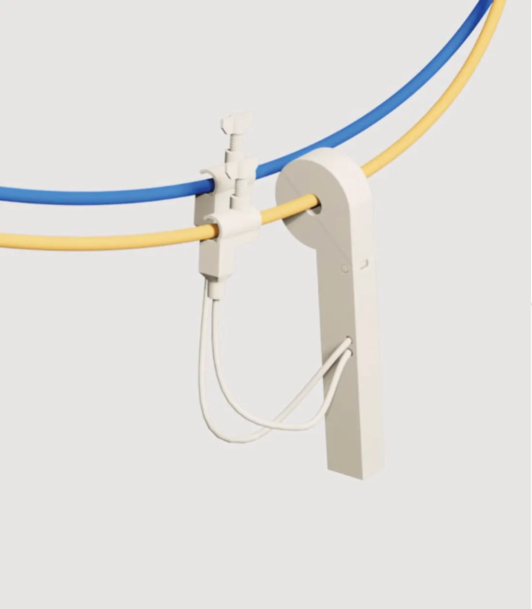
CLIP is increasing accessibility to electricity disaggregation technology through easy to install sensors, unsupervised machine learning algorithms and human-centred user interfaces.
Millions of Londoners are struggling to pay their energy bills, but they lack the information needed to effectively reduce their usage. In parallel with this, the UK's transition to renewable energy means energy networks will require greater engagement and flexibility from consumers to effectively balance electricity supply and demand.
CLIP analyses the energy consumption of individual appliances and uses this data to provide users with actionable insights, enabling them to reduce their electricity consumption by an estimated 20%.
Adding Business to Design Engineering
CLIP involved extensive business development on top of the technical work which provided the base of our innovation. As CEO I was wearing multiple hats: market researcher, strategist, salesperson, accountant, hardware designer, grant writer - every day was different. This let me expand my design engineering skillset and understand the multidisciplinary areas that it interfaces with.
Highlights of these business areas of the start-up include raising ~£70,000 non-dilutive investment and pitching to over 100 people at the Imperial Undaunted Greenhouse programme demo day.
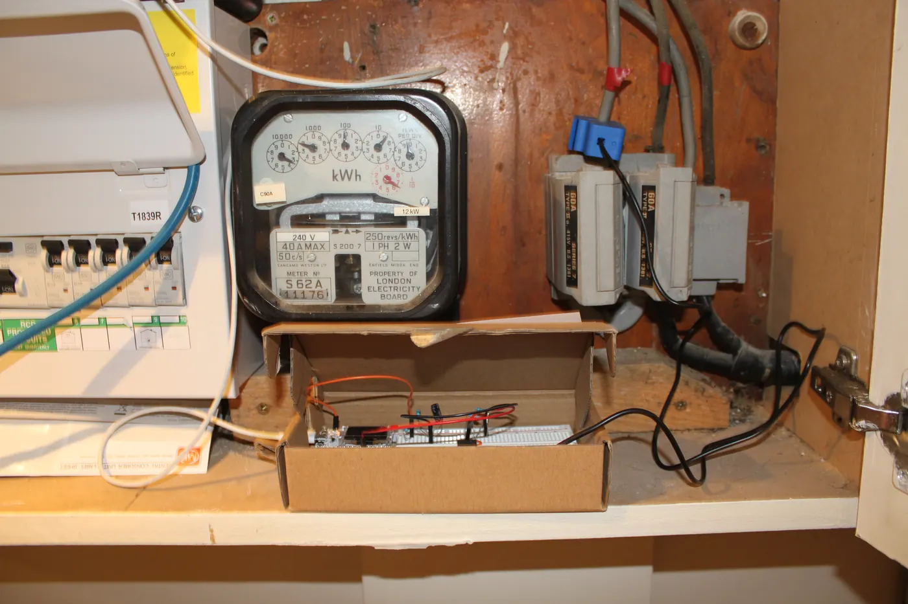
Initial Hardware Prototype
Using a Heltec Wifi kit, Arduino and Matlab Thingspeak to sample current data from a house for several months. The firmware was iteratively upgraded: from 1Hz sampling to 1000Hz, from 15s interval single upload to half a second bulk upload, from only current sampling to power approximation using voltage.
Technical and Visualisation Development
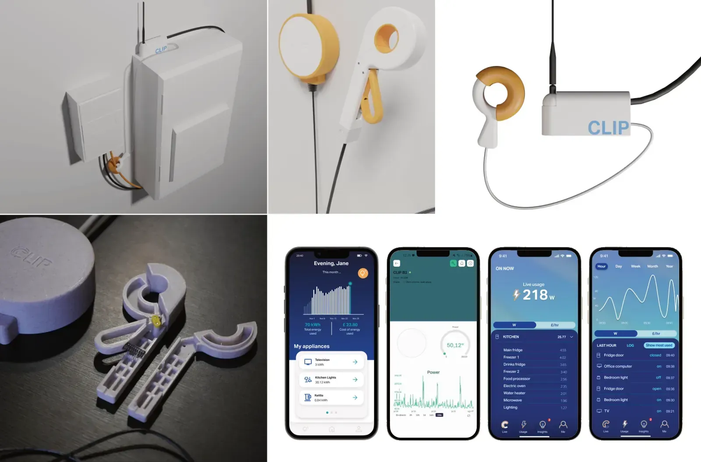
CLIP Data Collection MVP
The main parts of the hardware are the current transformer, the capacitive voltage sensor and the ESP32 based board with microcontroller, ADCs, communication and power components. Many elements like the pinout and aux-in on the board are needed for ongoing debugging and testing outside of the full casing and other industrial design components. This design evolved from a focus on form to incorporate all of the necessary function.
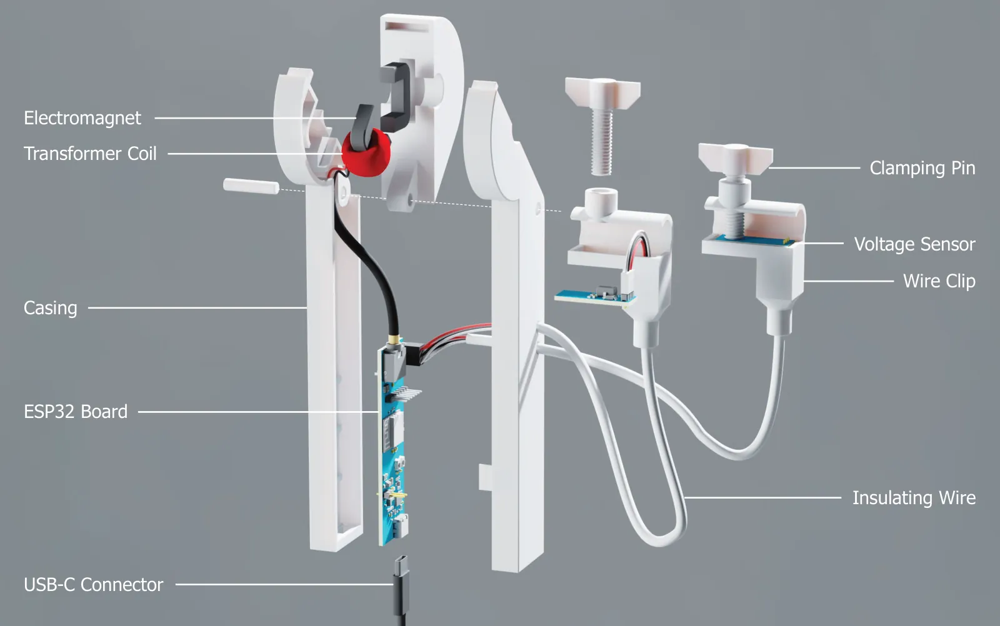
Machine Learning
The machine learning algorithm separates the overall household electricity signal into different appliances by learning certain features. There are main types of appliance signals: steady-state, variable and cyclical. By recognising these patterns, along with incorporating things like nominal power difference, use duration and time of day, the algorithm can determine significant differences in appliances. This drives actionable energy saving insights.
CLIP leverages unsupervised algorithms to be able to bring disaggregation to unseen commercial contexts. Here is some disaggregated data from one of our home trials.
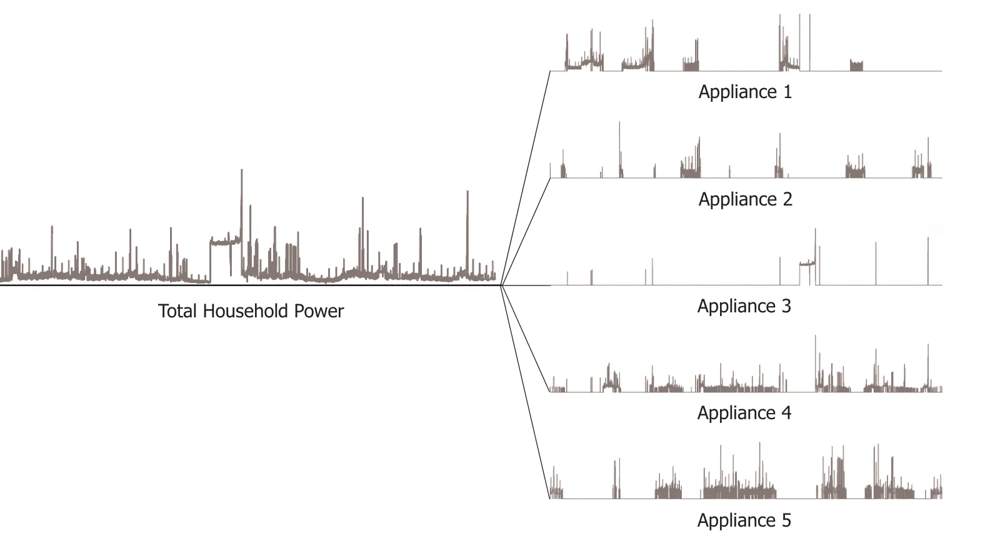
Data Pipeline
-
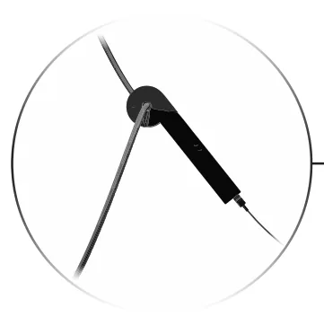
Data Collection
The ESP-32 based CLIP hardware collects current and voltage data completely non-intrusively from the electricity intake to the premises. Data is sampled at 500Hz and batched to be sent to the cloud once per second.
-
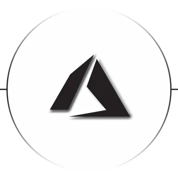
Processing and Storage
All of the data is picked up at an Azure IoT hub and then streamed through to an events hub for longer term storage and easier access from other programs. Prototypes were running for several months so I started developing Grafana dashboards to easily measure and visualise cloud analytics like uptime.
-
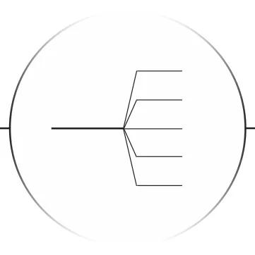
Inference
The events hub is accessed by python scripts which run the inference for the ML model, after it has been trained on at least 1 week's worth of energy data. This breaks it down into separate appliance data signals and measures key information like power spikes and total power consumed per appliance.
-
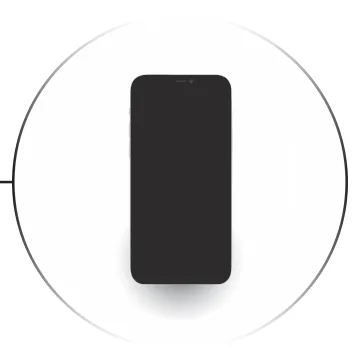
User Insights
Using these key features from the different appliances to build up an energy profile for the premises, actionable insights are provided to the user through notifications and the intuitive app interface. These can be anything from appliance malfunction alerts to scheduling reminders by incorporating energy price predictions.
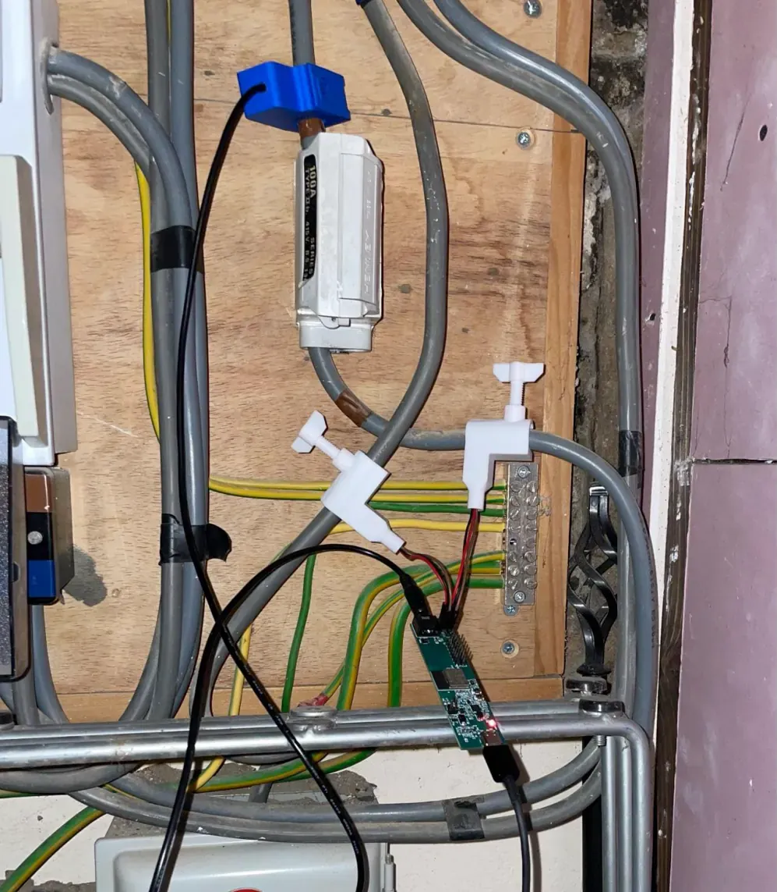
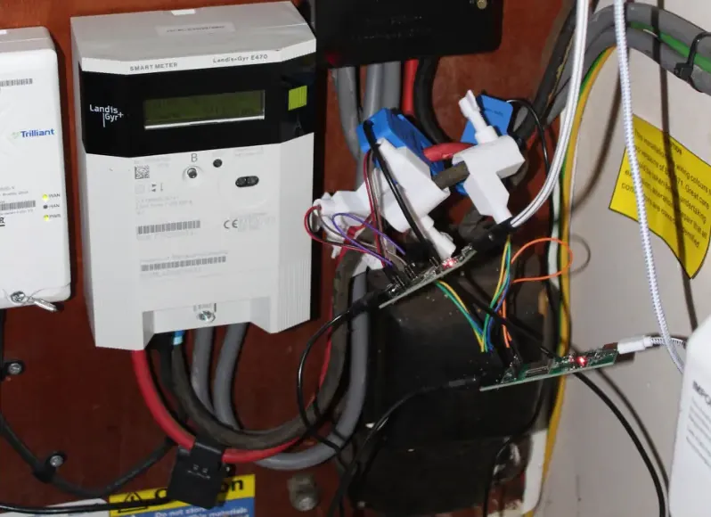
Operational Environment
I developed CLIP to TRL level 6, with the prototype functioning in the operating environment. Here CLIP has been installed in the restaurant of one of our B2B partners (left) and in a house (right) and could be installed completely non-intrusively on any single phase system with accessible live and neutral wires.
This is my previous start-up - to see more, go visit LinkedIn!